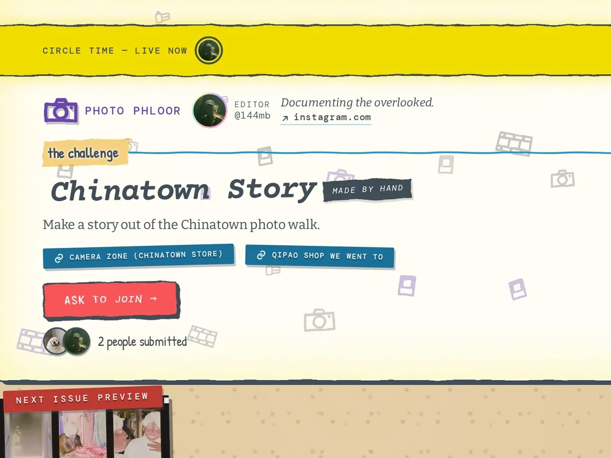
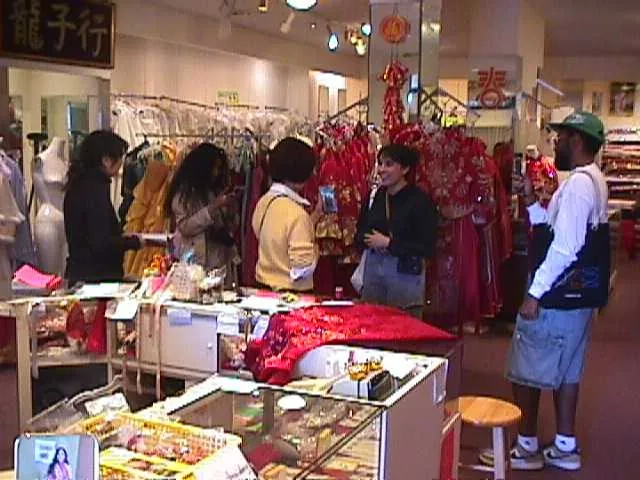
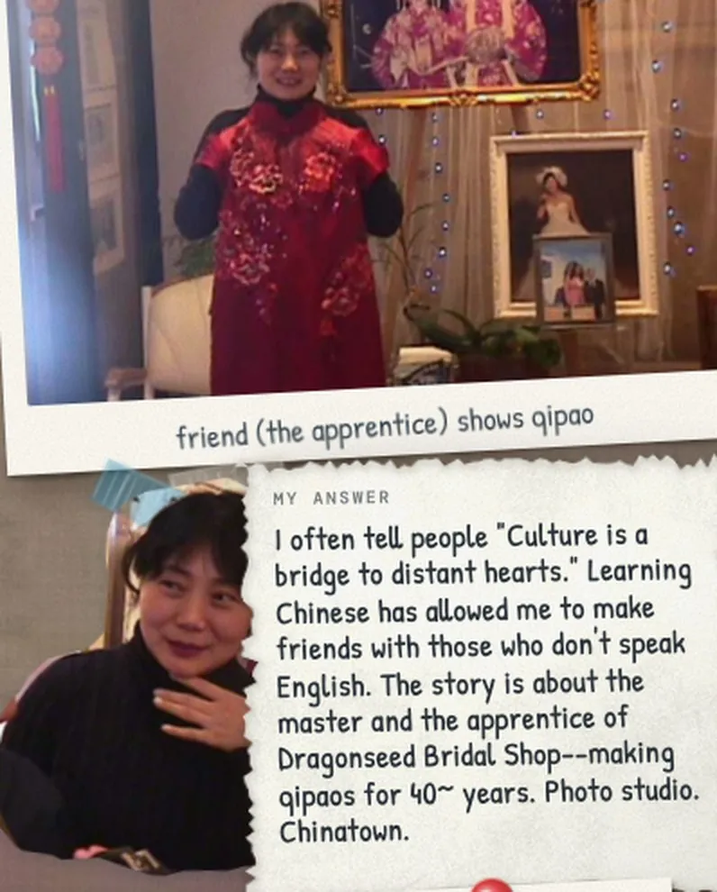

Challenge your talents.
A club sets a challenge. You meet until it’s done. Then it’s show-and-tell.
Sign up or log inHonor your talents.
cut here
why nothing gets made
Everyone has a group chat. Nobody has a system.
JAN 4
found this sick technique 🔥
omg we should totally do this
yes!! this weekend??
eleven months later DEC 2is this chat still alive lol
the challenge
Shoot a roll you'd normally be scared to.
due friday
one zine, everyone in it
We nag for you. In everyone’s calendar, inbox and texts.
how it works
One challenge at a time.
Here’s Photo Phloor doing one.
-
Jul15
The host posts the challenge
And picks the due day.

snap a Chinatown story -
1st & 3rd Wed
Meet up. Work on it.
A short meetup every week or so. Online or in person. Your host picks when.

in person, this week -
Aug10
Add your page, any day
Photos and a few words. You can see who’s done.

the zine, so far -
on thedue date
-
then
…and the next one goes up.

who’s using Drex

![[ 3AM, 2001 ], by Photo Phloor — pages of the real issue.](assets/zines/hero/phloor.jpg)